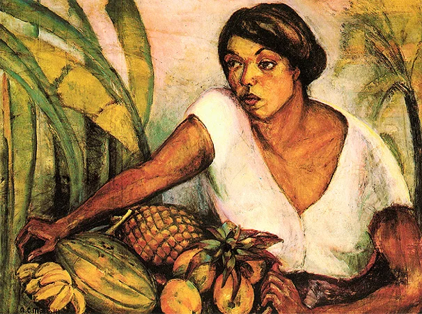
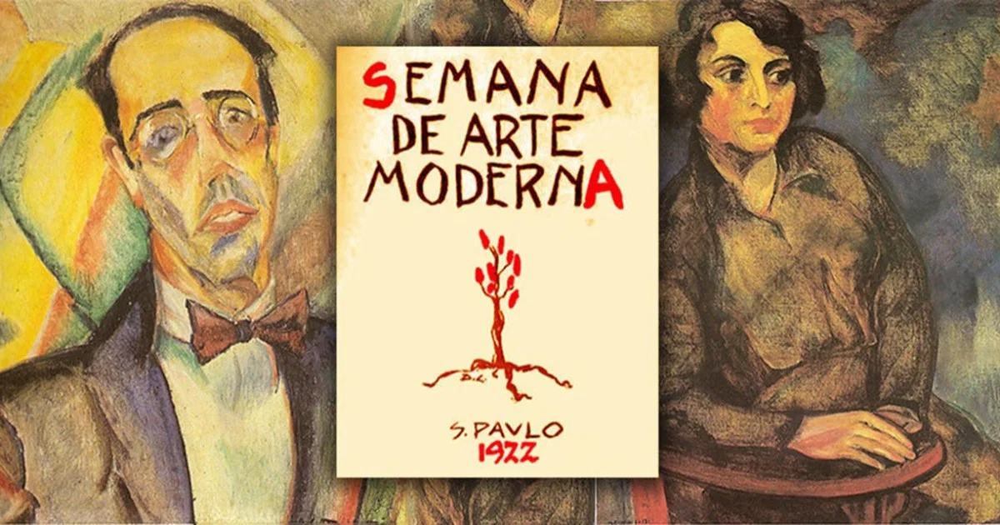

“Tropical”, óleo sobre tela, 1917.
Semana da Arte Moderna
Anita Malfatti - Conheça a obra que marcou a história da arte

“Tropical”, óleo sobre tela, 1917.
A obra Tropical, produzida em 1917 pela artista brasileira Anita Malfatti, é uma pintura importante para compreender as transformações que aconteceram na arte brasileira no início do século XX. A composição retrata uma mulher negra segurando frutas tropicais, aproximando a figura humana de elementos associados à natureza e à identidade brasileira. As cores, as formas e a maneira como a personagem é representada revelam uma abordagem artística que se distancia de algumas convenções tradicionais da pintura acadêmica.
Mais do que retratar uma cena cotidiana, a obra permite refletir sobre a maneira como o Brasil era representado artisticamente em uma época em que muitos artistas ainda utilizavam modelos europeus como referência principal. Ao explorar uma personagem e elementos ligados ao contexto nacional, Anita Malfatti contribuiu para ampliar as possibilidades de representação da realidade brasileira. A pintura também desperta discussões sobre identidade cultural, diversidade e a presença da população negra na história da arte do país.
A pintura Tropical foi criada em 1917, durante o período em que Anita Malfatti desenvolveu parte de sua formação artística nos Estados Unidos. A obra foi realizada em Nova York e apresenta características que ajudam a compreender o interesse da artista por temas brasileiros e por novas possibilidades de representação visual. Produzida em óleo sobre tela, com dimensões de aproximadamente 77 por 102 centímetros, a pintura integra o acervo da Pinacoteca de São Paulo.
Naquele momento, Anita estava em contato com diferentes ideias artísticas que valorizavam a experimentação e a liberdade de criação. Ao retornar ao Brasil, trouxe consigo experiências que influenciaram sua maneira de pintar. Tropical se destaca por unir uma figura humana a elementos da natureza, criando uma composição relacionada ao ambiente e à cultura brasileira. Essa escolha temática ganha importância quando consideramos que, no início do século XX, a arte produzida no país ainda era bastante influenciada pelos padrões acadêmicos europeus.
A trajetória da obra também possui relevância histórica. Em 1929, Anita Malfatti doou a pintura à Pinacoteca do Estado de São Paulo, contribuindo para a preservação de um trabalho importante de sua produção artística. Atualmente, a obra pode ser estudada como parte do patrimônio cultural brasileiro e como um exemplo das mudanças que começaram a transformar a pintura nacional no século XX.
A composição de Tropical apresenta uma mulher negra segurando frutas, elementos que aproximam a personagem da natureza e de aspectos associados à vida brasileira. A presença das frutas tropicais chama a atenção para a diversidade natural do país, enquanto a figura humana ocupa uma posição central na interpretação da obra. Essa combinação permite observar como Anita Malfatti explorava temas ligados à realidade nacional em um período de mudanças culturais e artísticas.
A pintura também pode ser analisada a partir da maneira como a população brasileira era representada nas artes visuais. A presença de uma mulher negra em uma obra que aborda elementos nacionais abre espaço para discutir a participação da população negra na construção da identidade cultural do Brasil. Entretanto, é importante considerar que a representação artística não significa, necessariamente, uma valorização igualitária de todos os grupos sociais. A obra deve ser compreendida dentro de seu contexto histórico, levando em conta as ideias, os preconceitos e as relações sociais existentes naquela época.
Outro aspecto importante é a relação entre o título e o conteúdo visual. A palavra Tropical remete ao clima, à vegetação e à variedade de frutas associadas às regiões tropicais. Esses elementos contribuem para a construção de uma imagem do Brasil e demonstram como a arte pode participar da formação de ideias sobre um país. Por isso, a pintura não deve ser observada apenas como uma representação de uma pessoa com frutas, mas também como um registro das discussões sobre cultura e identidade nacional que marcaram o período.
O Modernismo brasileiro surgiu em um contexto de questionamento dos modelos artísticos tradicionais e de procura por novas maneiras de expressar a realidade do país. Nesse cenário, Anita Malfatti teve um papel fundamental ao apresentar trabalhos que se afastavam das convenções acadêmicas e demonstravam maior liberdade na utilização de cores, formas e composições. Sua produção contribuiu para que artistas e intelectuais começassem a discutir o que significava criar uma arte verdadeiramente moderna no Brasil.
A obra Tropical participa desse contexto por abordar um tema relacionado à realidade brasileira em uma linguagem artística que não se limita à reprodução tradicional da aparência. Sua importância está ligada à trajetória de Anita e ao processo de renovação da arte nacional. Embora a pintura não tenha sido apresentada durante a Semana de Arte Moderna de 1922, ela integra a produção anterior ao evento e ajuda a compreender as ideias que circulavam entre os artistas modernistas.
Além disso, a obra demonstra que o Modernismo brasileiro não se limitou a uma única técnica ou estilo. O movimento reuniu diferentes experiências, influências e interpretações sobre a cultura nacional. Nesse sentido, Tropical contribui para o estudo das relações entre arte, sociedade e identidade, mostrando como uma pintura pode revelar aspectos importantes do período em que foi criada.

A Semana de Arte Moderna aconteceu entre os dias 13 e 17 de fevereiro de 1922, no Theatro Municipal de São Paulo. O evento reuniu artistas, escritores, músicos e intelectuais interessados em renovar a produção cultural brasileira. Em um período no qual os modelos europeus ainda exerciam grande influência sobre as artes nacionais, os participantes defendiam maior liberdade criativa e a construção de uma expressão artística conectada à realidade do Brasil.
Durante a programação, foram apresentados trabalhos de literatura, música e artes visuais que provocaram diferentes reações do público. Algumas propostas foram recebidas com estranhamento e críticas, justamente porque questionavam os padrões considerados tradicionais. Entre os participantes estavam nomes como Mário de Andrade, Oswald de Andrade, Di Cavalcanti e Anita Malfatti, que já havia provocado debates importantes com sua exposição de 1917.
A participação de Anita Malfatti nesse movimento foi significativa porque sua experiência anterior ajudou a abrir espaço para o debate sobre a arte moderna no Brasil. Sua trajetória demonstrava que era possível experimentar novas linguagens, mesmo diante da resistência de parte da sociedade. Assim, a Semana de 1922 não surgiu de maneira isolada, mas foi resultado de discussões e iniciativas que vinham acontecendo nos anos anteriores.
É importante destacar que Tropical não foi exposta durante a Semana de Arte Moderna. Sua relação com o evento está no contexto histórico e artístico do qual faz parte. A pintura foi criada em 1917, cinco anos antes da Semana, e ajuda a compreender as transformações que contribuíram para o desenvolvimento do Modernismo brasileiro.